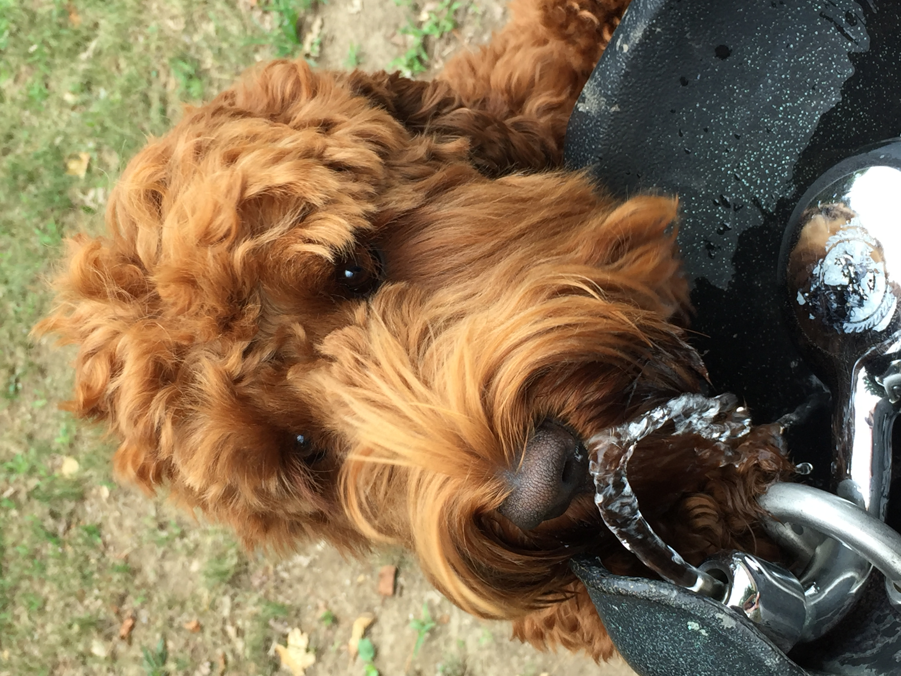
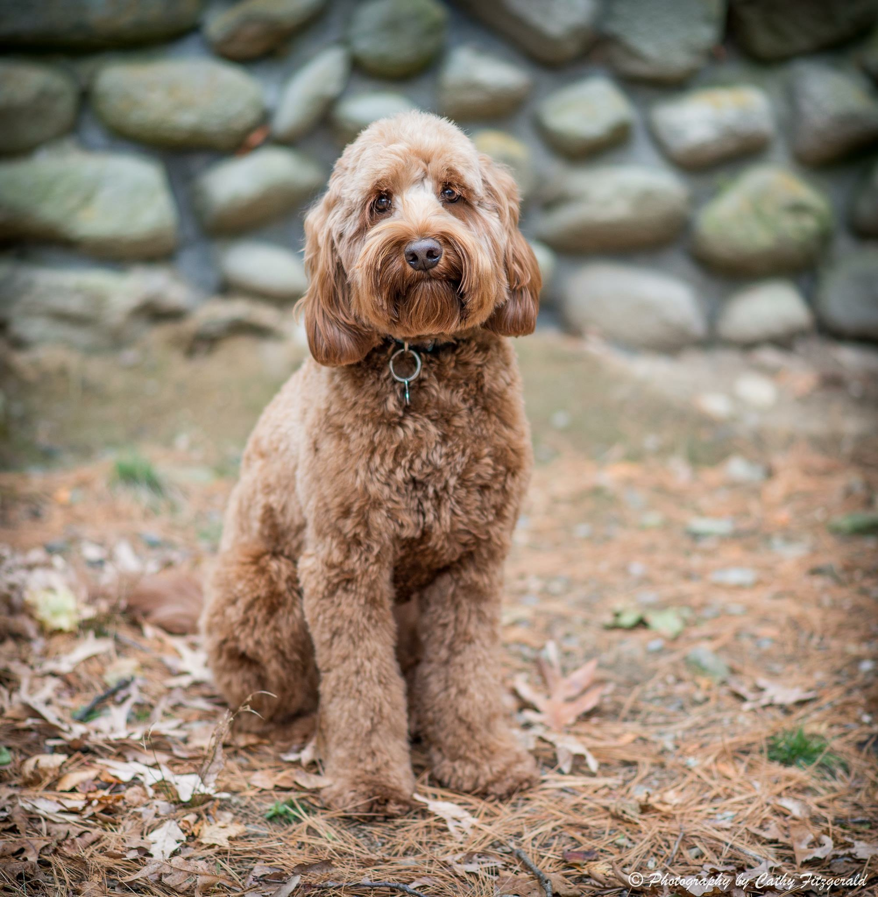

Thought dogs can't talk, think again
An Interview of Brady...


Today, I have the honor of speaking with Brady the dog. We talked inside his favorite doggy bed. He kept trying to lick me during the interview.
What is your favorite food? Why?
Brady's response:
“My favorite food is kibble. Specifically beef. I think it is delicious and it smells really good”.
What is your favorite music? Why do you like it?
Brady's response:
“Who let the dogs out by the Baha men. I like it because I am a dog, so the song is about me. Also I love being outside”.
What is your favorite vacation place? Why do you have any specific memories that you can share?
Brady's response:
“My favorite vacation place is at my friends Tigger's house. Apparently my family won’t let me on a plane, so I stay at Tigger’s house. Once, Tigger ate my kibble and I got mad at him, but we’re still friends.
What is one thing in the world that you would like to accomplish (when you are older?)
Brady's response:
“I want to live in the bookstore with Bella. Bella seems very nice, and I’d get pet every day by all the St. Markers”
What is one thing in the world that you would like to change?
Brady's response:
“I would change the TV remotes, so they are dog-friendly. It is so hard for me to watch tv, and I want to control what shows I watch”
What is one thing in the world that makes you most happy?
“The one thing that makes me so happy, is when my brother Brett plays fetch with me. He can throw the ball so far, and I like when he chases me to get the ball”